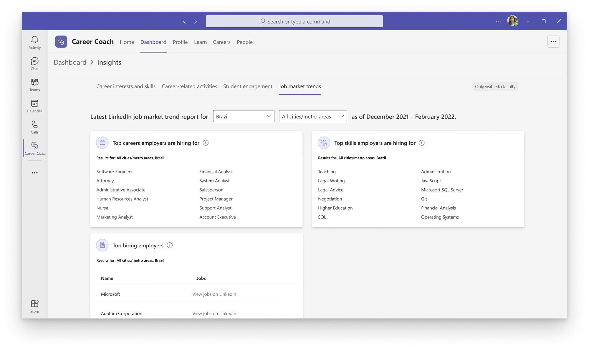

Case Study · Microsoft Education · Career Coach
Turning data into insights and storytelling
Career Coach unlocked a significant volume of data for university faculty — skills extracted from resumes, career interests bookmarked in the app, alumni industry trends. I focused on the narrative behind those metrics: transforming disparate data points into a cohesive story that could empower college career counselors to better support their students.
I was given two seemingly separate feature requests: first, integrating LinkedIn's Job Market Insights widget into Career Coach to increase API usage of the existing LinkedIn Economic Graph; and second, surfacing student usage data for university stakeholders.
Underlying these requirements was a fundamental question: How might Career Coach help university faculty members understand their students well enough to help them achieve their career goals?
- I recruited a diverse group of faculty for think-aloud usability sessions of LinkedIn’s existing Job Market Insights widget to understand dropdown selections and information gaps.
- I also conducted interviews, and in a second round of testing, I did a card sort exercise to understand the importance and stack ranking of the data points.
- We found job market data is useless on its own; faculty read the market through their specific students’ majors and skills and cared about the latest three months of market data.
- For students, real-world constraints like visa status and “dream city” locations decide what is realistic for their career goals.
- The Insight Reframing: Moved away from side-by-side data sets—which still put cognitive load on professors to gather the insights they need—and instead, worked to storytell students’ skill gaps based on their dream city and career.
- The “aha” moment of we need to switch the inputs and outputs of the LinkedIn widget and design for storytelling the student skill gap.
- The Tradeoff: For the initial release, I decided to use Career Coach alumni data for the inversion of the inputs and outputs due to technical constraints. Both the Teams and LinkedIn engineering teams needed more resources to rework the LinkedIn widget to fit our use cases.
The shipped design followed Microsoft Teams brand and component library, held an accessibility Grade A rating, one of the few Grade A rated products at Microsoft.


Impact
A market differentiator and stronger partnerships
Walking customers through the Insights work on live calls turned the personalization story into a selling point — three new universities signed before general availability. The same work deepened the LinkedIn partnership: they agreed to combine identity work with us and shared long-term goals for the integration.